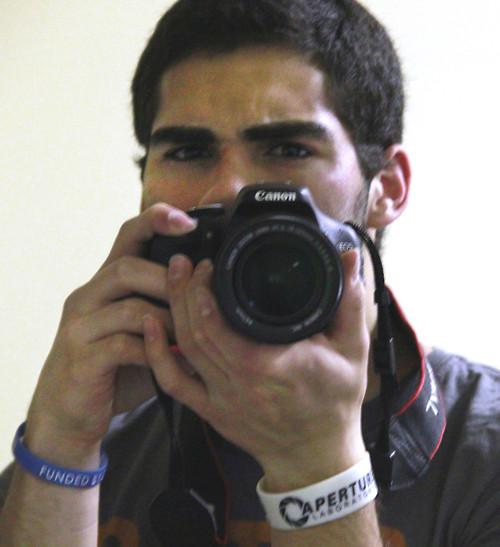

A Little Bit About Myself
I've been playing video games since I was around 7 years old, starting with Pokemon Yellow Version. Ever since then I've almost always had some kind of gaming device in my hand. I mainly played them to pass the time and for my own enjoyment, but as I got older I started to realize why I loved games so much. It was the idea that I could detach myself from everything that was going on in the world and immerse myself in this new and different world where I could be anything I wanted to be. Video games became a place where I could let go of what was going on and just sort of destress from everything.
So naturally, I spent more time playing video games growing up, but I also started to see myself getting into video games as a career, whether it was working at a company like Nintendo or being a playtester. As I went through high school, I found that I had a knack and passion for journalism, writing columns and stories for the school newspaper (a very barebones project that I had started with a friend). Once I entered college and transferred into the journalism program a year later, I merged my passion for games and knack for journalism and decided to pursue writing about video games, whether I'm writing game reviews, updates on a game being pushed back for development or even breaking news on a new announcement.
Consoles/Handhelds I've owned
- Nintendo 64
- Game Boy Pocket
- Game Boy Color
- Game Boy Advance
- Game Boy Advance SP
- Nintendo Gamecube
- Nintendo DS
- Nintendo Wii
- PlayStation 2
- Xbox 360
- PC (we'll count it as a console for the time being)